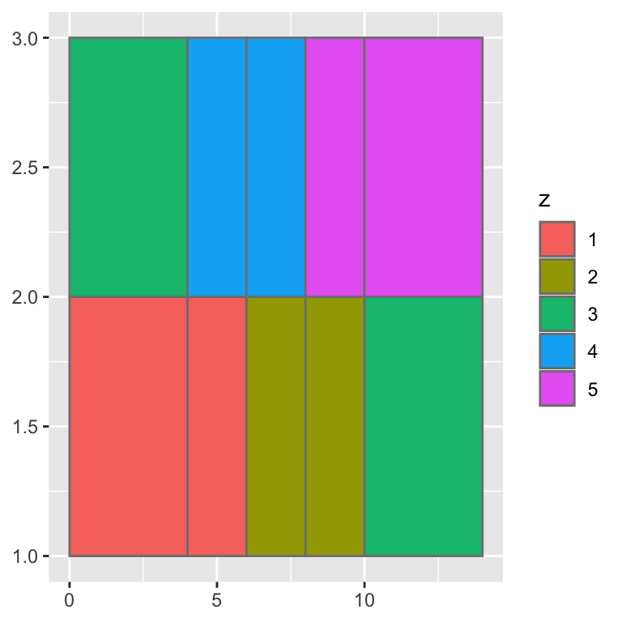

Getting started with ggplot2
Initialising the plot

- When there is no layer, it produces a blank layer like top plot.
Mapping data variables to aesthestics

- This get the scale ready but no layer is defined so nothing is rendered in the panel.
A scatterplot with geom_point()

- Scatter plot of price vs carat of diamonds
- Each point correponds to a dimaond
A 2D heatmap with geom_bin_2d()

- Similar to
geom_hex()but the shapes are boxes.
Count of overlapping points with geom_count()

A boxplot with geom_boxplot()

A violin plot with geom_violin()

A dot plot with geom_dotplot()

A histogram with geom_histogram()

A frequency polygon with geom_freqpoly()

A 2D contour plot with geom_contour()

A 2D contour plot with geom_density_2d_filled()


df <- data.frame(
x = rep(c(2, 5, 7, 9, 12), 2),
y = rep(c(1, 2), each = 5),
z = factor(rep(1:5, each = 2)),
w = rep(diff(c(0, 4, 6, 8, 10, 14)), 2)
)
ggplot(df, aes(x, y)) +
geom_tile(aes(fill = z), colour = "grey50")

ggplot(df, aes(xmin = x - w / 2, xmax = x + w / 2, ymin = y, ymax = y + 1)) +
geom_rect(aes(fill = z), colour = "grey50")